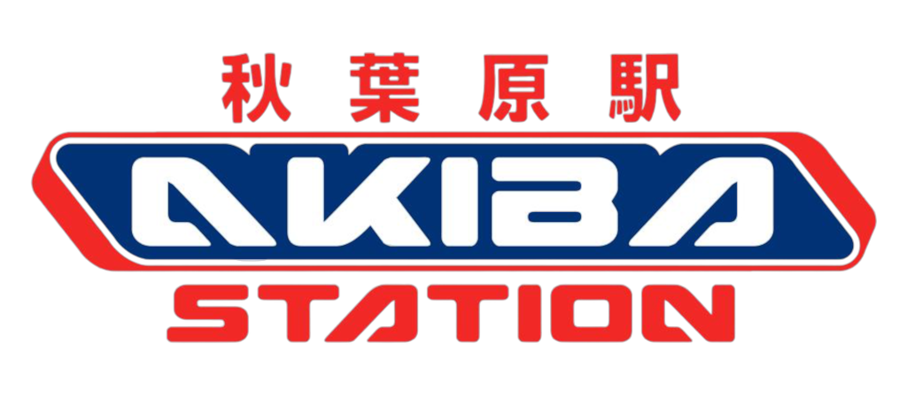
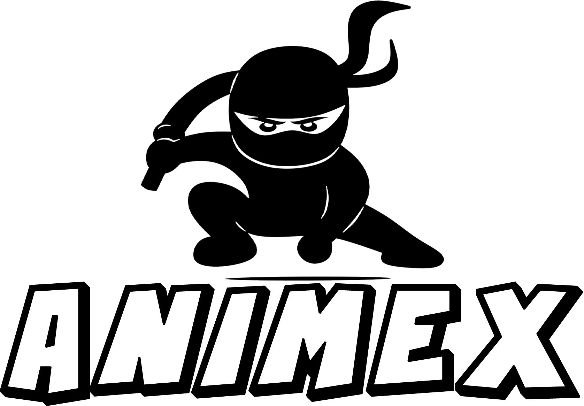
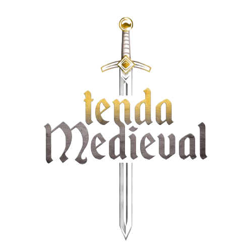

Apresentado por Felipe "Nero" e Nando "Colecionando"
Seja um ParceiroO Quinta Podcast é um espaço leve e descontraído dedicado ao universo geek e otaku. Nosso estilo é o de um verdadeiro “papo de boteco”, sempre recheado de referências, boas risadas e convidados especiais que compartilham suas histórias e vivências.
Criado em 2023, o projeto nasceu com transmissões ao vivo e, com o crescimento da comunidade, evoluiu para gravações presenciais realizadas no Akiba Station, um dos pontos mais icônicos da cultura geek em São Paulo.
Seguidores no Instagram
Visualizações no Perfil
Média de Alcance Mensal
Carregando episódios...
Dublador: Vegeta, Lucifer e Brook
Apresentadora e E-sports
Apresentadora e E-sports
Repórter - Rede Globo
Dubladora e Apresentador de Podcast
Dubladores: Sonic, Iron Man, Yusuke e Spider Man


